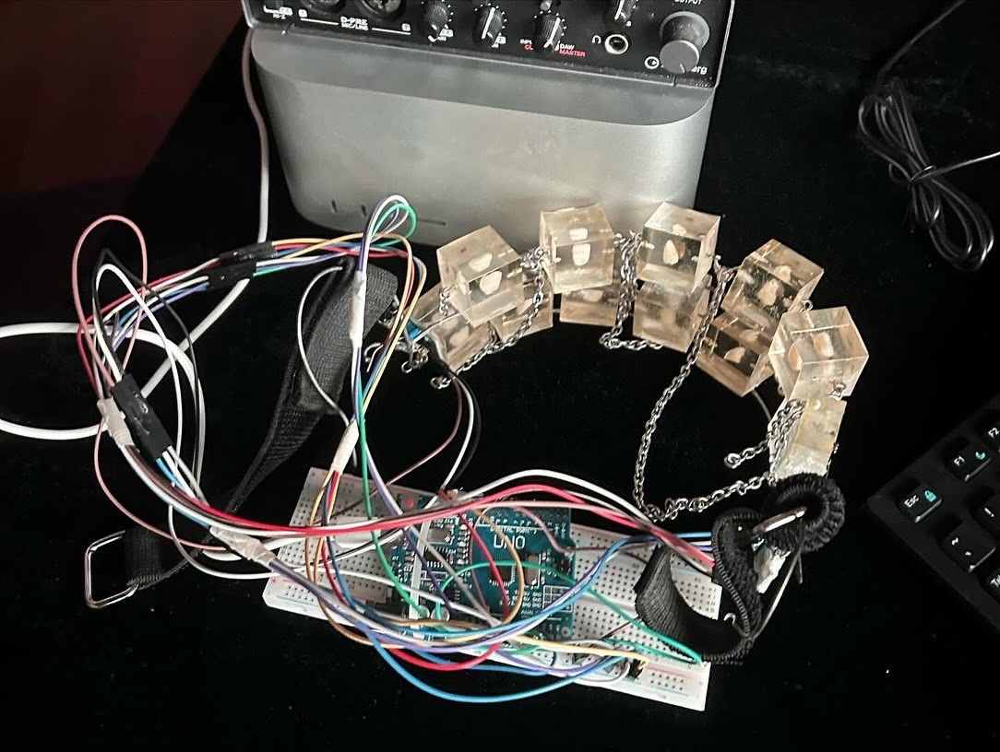
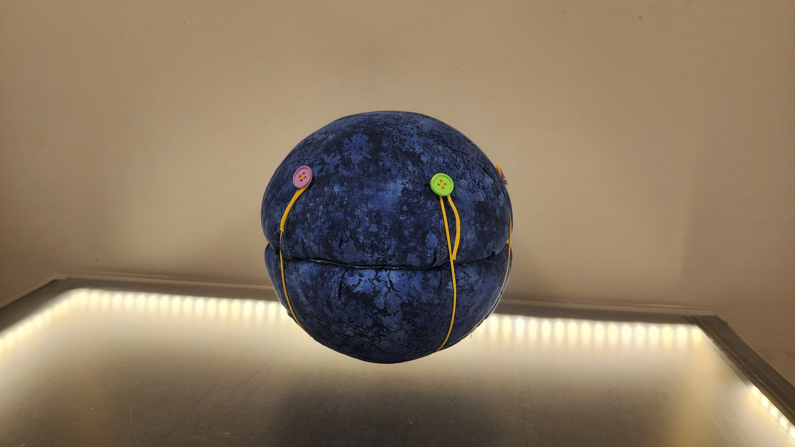
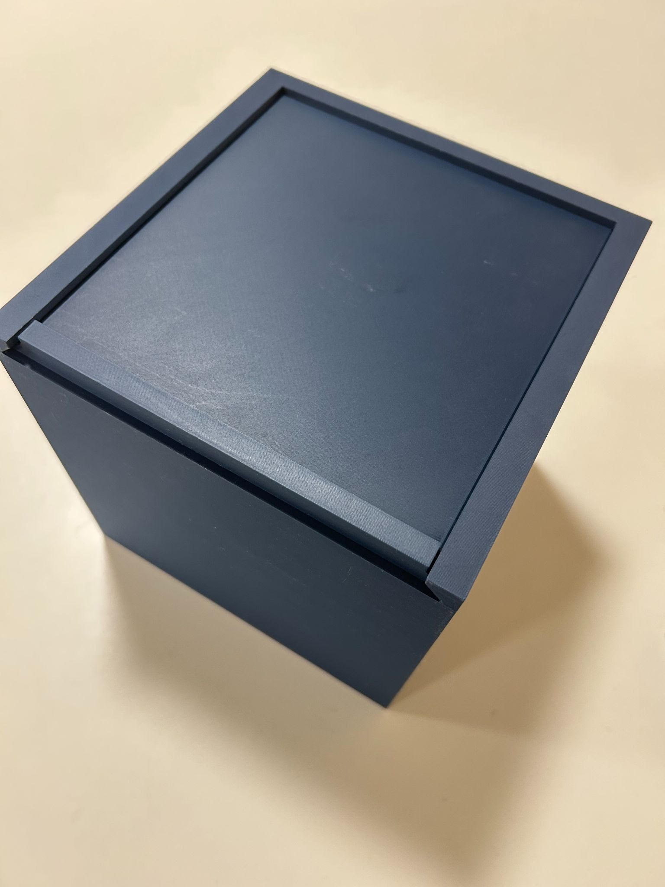

Yixuan Jin is a second-year master's student in Media Arts at the University of Michigan, where she also works as a graduate student research assistant. Her research interests include interactive music, accessible musical instruments, and tangible interaction. Her creative work has been presented at NIME 2025, ICMC 2024 and 2025, MUSICACOUSTICA 2024, and NYCEMF 2024.
Outside the studio: tarot, crystals, hiking, and travel.
Selected work · 2024–2026
Projects
Each project is presented in a consistent reading order with its description, links, and documentation. All project information is available without hover or pointer interaction.
Interactive audiovisual dance performance · 2024
Moodlog
Moodlog is an interactive audiovisual dance performance. Its interface, PrintWave, uses fingerprint data, Nintendo Ring-Con and Joy-Con movement, sound, visual response, and body language to support emotional expression for people with aphasia.
An interactive audiovisual stage work inspired by orthodontic treatment and the relationship between natural growth, mechanical intervention, and ecological balance. ToothChain is the custom data-driven musical instrument built for the performance. The work was presented at NIME 2025 and MUSICACOUSTICA-HANGZHOU 2024.
Live performance with responsive green projection.ToothChain custom musical instrument.Projected visual environment.

Full stage presentation.
Accessible music · Tangible interaction · 2025–present
TAMIE / Trainable Accessible Musical Instruments
TAMIE is building a platform where people train digital musical instruments to respond to the way they move. The project combines sensing hardware, musical synthesis, an open mapping layer, and machine learning so players can define how their gestures become sound.
Collaborative workshop with the tangible interface.

Tracked objects used to map movement to sound.

Prototype tracking and sound mapping interface.
PAT/SI 515 Motion Capture for Interaction Design · 2026
EchoStrike: Spatial Audio Motion Game
A group project created with Bruce Li and Jingle Chen. EchoStrike is an audio-only game using motion capture and spatial audio as its primary interface. Directional and distance cues communicate threats, hits, misses, defenses, and failures.
A group project created with Justin Mason. Vibrasling is a virtual musical instrument that uses two VR controllers as a slingshot interface. Stretching, aiming, and releasing control pitch, panning, volume, particle synthesis, sound events, and haptic feedback.
Two-controller slingshot interaction.Gesture-controlled particle and sound response.Immersive performance environment.
Fixed media audiovisual composition · 2024
The Dew Waker
A fixed media audiovisual composition exploring image, texture, and transformation through layered electronic sound and projected visuals. It was presented at NYCEMF 2024 and ICMC 2024.